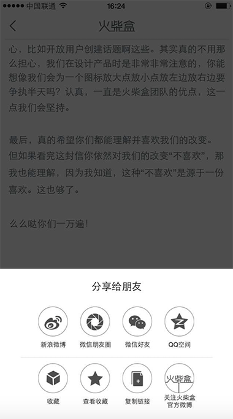

认真体验了新版的火柴盒，根据个人喜好和经验交流几个意见。
1.主页-话题页
1.视觉上过于诡异，比较奇怪的设计，建议重新设计
2.大叉是要鼓励用户去删除还是干吗，既不美观又没必然理由，建议重新设计
2.主页-通用
1.这个UI比较不美观，建议重新设计
2.Android有个火柴盒的logo，效果很好，iOS就比较单调无常，另外几分钟前更新有点多余，用户不会关心这个，下拉刷新可以做的比较个性
3.查看全部话题只用一个灰度区分，建议设计更突出显示方式
3.内容页
1.内容页是由主页点击左上角火柴按钮跳转过来的，按照现实的交互习惯，应该在2的位置返回，建议不新开界面或设计其他打开交互方式
4.收藏功能

收藏系列的功能对于喜爱火柴盒app的用户来说太重要了，但这个功能隐藏的如此之深，简直怕用户发现，建议将收藏功能移至个人页或更重要的其他一级目录，另外收藏功能太薄弱，建议重点延伸，将极大改善用户体验和增强黏性。
5.火柴盒代表大会
1.过于偏远，对于大多数右手操作用户成本过高，建议移动到2附近的位置，作为帖子操作连贯功能区。且图标表意不明，作为开发者，在没点击之前都无法猜透他的功能。
2.图标表意不明，我开始以为是编辑，问了周围的人一致的想法，发现居然是分享，建议优化
6.个人页
1.鼓励用户的操作都应让用户马上可以操作，关注一个用户需要移动到左上角再移动到底部点击了关注，还会弹出提示框问是否关注。如此之繁琐的操作，极大的影响了体验，建议将关注，私信移动到2区域，加入黑名单保留原位置。
7.好友页
1.好友页面实在令人费解，当我没有好友发帖的时候，改页为空白，当有好友发帖的时候才发现该页展示的是好友的帖子，好友第一印象应该是通讯录，建议把好友发布的帖子折叠到话题或火柴广场，或其他更清晰设计